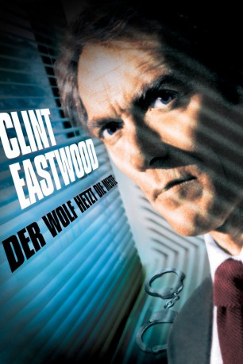
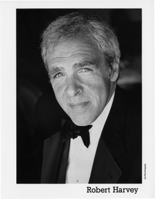

#4310 Der Wolf hetzt die Meute
Alternativ: Tightrope
 
 IMDB-Wertung: 6.3 / 10
IMDB-Wertung: 6.3 / 10  Metascore: 0
Metascore: 0 
Der Polizeidetektiv Wes Block ist einem psychopathischen Frauenmörder auf der Spur, der im berüchtigten "French Quarter" von New Orleans Angst und Entsetzen verbreitet. Aber nicht nur die Ermittlungsarbeit, sondern auch sein eigener Trieb führen Block immer wieder ins Prostituiertenmilieu. Die Sache wird für ihn zum tödlichen Spiel, als er merkt, daß der Killer sich in seinem Privatleben bestens auskennt. Der sadistische Mörder spannt sein Netz, der Jäger wird zum Gejagten. Wes Block und seine Familie geraten in höchste Lebensgefahr.
Jahr: 1984
Dauer: 114 Minuten
FSK: 16
Land: USA Studio: Warner Bros.Tonspuren: DD1.0 - ,
Untertitel:
Auflösung: 1080p (1920x1080) Größe: 8949 MB
Genre: Mystery, Thriller
Regisseur: Richard Tuggle
Drehbuch: Cliff Hollingsworth
Soundtrack:
Darsteller:
 Clint Eastwood als Wes Block
Clint Eastwood als Wes Block- Geneviève Bujold als Beryl Thibodeaux
- Dan Hedaya als Det. Molinari
- Alison Eastwood als Amanda Block
- Marco St. John als Leander Rolfe
- Jamie Rose als Melanie Silber
- Janet MacLachlan als Dr. Yarlofsky
-  Robert Harvey als Lonesome Alice
- Ron Gural als Coroner Dudley
- Becki Davis als Nurse
- Jonathan Sachar als Gay Boy
- David Valdes als Manes
 David Dahlgren als Patrolman Julio
David Dahlgren als Patrolman Julio- Jenny Beck als Penny Block
- Rebecca Perle als Becky Jacklin
- Regina Richardson als Sarita
- Randi Brooks als Jamie Cory
- Margaret Howell als Judy Harper
- Rebecca Clemons als Girl with Whip
- Graham Paul als Luther
- Bill Holliday als Police Chief
- John Wilmot als Medical Examiner
- Margie O'Dair als Mrs. Holstein
- Joy N. Houck Jr. als Swap Meet Owner
- Stuart Baker-Bergen als Blond Surfer
- Donald Barber als Shorty
- Layton Martens als Sgt. Surtees
- Richard Charles Boyle als Dr. Fitzpatrick
- Valerie Thibodeaux als Black Hooker
- Lionel Ferbos als Plainclothes Gus
- Eliott Keener als Sandoval
- Cary Wilmot Alden als Secretary
- James Borders als Carfagno
- Fritz Manes als Valdes
- Jonathan Shaw als Quono
- Don Lutenbacher als Dixie President
- G. Wood als Conventioneer
- Kimberly Georgoulis als Sam
- Glenda Byers als Lucy Davis
- John Schluter als Piazza Cop
- Nick Krieger als Rannigan
 Lloyd Nelson als Patrolman Restic
Lloyd Nelson als Patrolman Restic- Rod Masterson als Patrolman Gallo
- Glenn Wright als Patrolman Redfish
- Angela Hill als Woman Reporter
- Ted Saari als T.V. News Technician
Datei: X:\1984\Wolf hetzt die Meute, Der (1984, FSK16, 1920x1080).mkv seit 05.09.2016
Festplatte: HD 1980-1986
 Es gibt insgesamt 46 Filme in der Gruppe '1984'
Es gibt insgesamt 46 Filme in der Gruppe '1984'